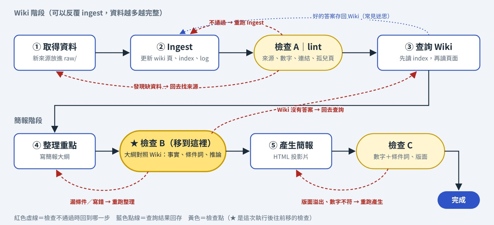
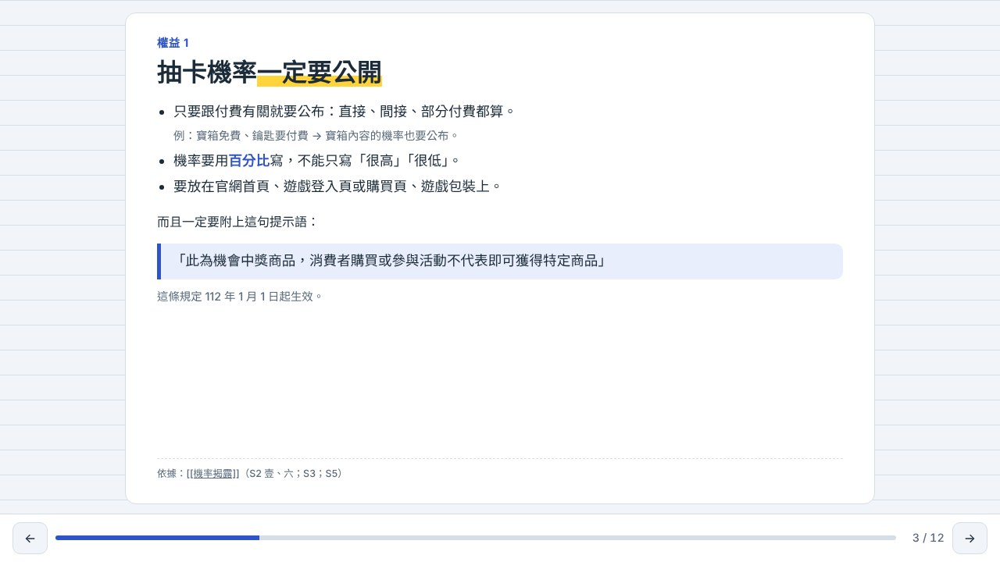

作業要做什麼
用「先討論、後生成」建立自己主題的 LLM Wiki（至少 ingest 5 份來源），再把 Wiki 當知識來源，做一份初學者看得懂的教學 HTML 簡報；並設計「取得資料 → 查詢 Wiki → 整理重點 → 檢查內容 → 產生簡報」的迴圈，實際跑一次後寫反思。
我做了什麼
- 先討論：選定主題「抽卡玩家的消費權益」（和第 7 週 RAG、期末專案同主題），並訂出讀者、範圍和規則，寫成 discussion.md 和 SCHEMA.md。
- 取得 8 份來源：消保法、遊戲契約應記載及不得記載事項、契約範本修正說明、通訊交易例外準則、公視新聞、數位產業署手冊、法律百科、行政院公告沿革，各存成
raw/的一份筆記（網址、日期、重點）。 - 逐份 ingest，整理出 11 個 wiki 頁、
index.md目錄和log.md操作紀錄；每句話都標來源（S1～S8），來源衝突寫成「⚠ 衝突與待確認」。 - 寫了兩支檢查程式：
check_wiki.py（來源、數字、連結、孤兒頁）和check_slides.py（投影片數字要出現在引用的 wiki 頁、條件詞不可遺漏）。 - 用問題「初學者抽卡前最需要知道什麼？」查詢 Wiki，寫大綱、逐點對照檢查、重寫，最後產生 12 張 HTML 投影片，並在投影機與手機尺寸實際檢查版面。
- 把每一步的結果存成 run-01 執行紀錄。


迴圈設計說明
| 哪裡會重複 | 為什麼 |
|---|---|
| 取得資料 ↔ Ingest ↔ 檢查 A | Wiki 會越長越大，每多一份來源就 ingest 一次、lint 一次；lint 發現缺資料就回去找來源。 |
| 查詢 → Ingest（回存） | 好的查詢答案（例如「常見迷思」）存回 Wiki，下次不用重查。 |
| 整理重點 ↔ 檢查 B | 大綱漏條件或把推論寫成確定，就重跑整理；Wiki 沒有答案就回去查詢，不准自己補。 |
| 產生簡報 ↔ 檢查 C | 數字不符、條件詞被刪、版面溢出就重新產生該張投影片。 |
結果與發現
- 檢查 A（lint）第 1 次抓到 11 個問題：10 個是 ingest 時漏標來源，1 個是檢查程式誤判；修正後 0 個。
- 錯最多、也最危險的是「整理重點」節點：大綱 v1 的 10 點中有 4 點出錯，全部是把法條壓成白話時刪掉條件，例如漏掉「扣除必要成本後」才退點數、漏掉「經限期改正仍不改正」才罰，或把 Wiki 標為「推論」「待確認」的內容寫成確定的事。
- 「查詢」節點 0 個錯誤：大綱沒有出現 Wiki 沒有的內容，代表先讀 index 再讀頁的方式有效。
- 產生簡報後內容沒有再出錯，但投影機尺寸（1280×720）有 5 張要捲動；而且第一次的版面檢查工具本身有 bug（截圖每張都是第 1 張），修好後才看到真正的問題。
- 流程因此改了兩件事：事實檢查從「簡報做完之後」往前移到大綱階段（檢查 B）；SCHEMA.md 新增「條件詞不可刪」規則，並把這些條件詞寫進
check_slides.py自動檢查。
心得
原本以為最容易錯的是 AI 亂編法條，結果真正出錯的地方是「把法條講白話」：每一句都很順、很好懂，但少了「扣除必要成本」「每次」這幾個字，意思就差很多。
這次學到檢查要放在錯誤剛發生的地方。如果等簡報做完才檢查，錯的句子已經被排版、做成測驗，要改的地方會多很多。
以上心得初稿由 Claude 根據執行紀錄草擬，待作者確認或改寫。
AI 協助說明
本頁的整理由 Claude 依我的作業內容協助撰寫，我確認後採用。